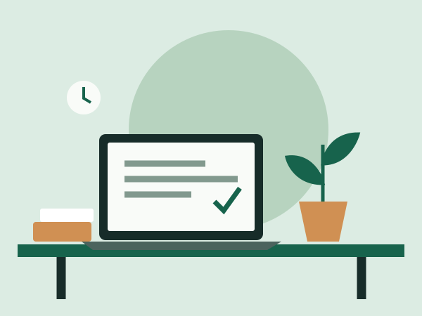

UM PASSO DE CADA VEZ
Seu futuro começa com um bom plano.
Encontre seu jeito de aprender. Explore métodos, experimente novas rotinas e construa uma trilha que faz sentido para você.
Encontrar meu métodoGratuito. No seu ritmo. Do seu jeito.

Grandes descobertas.
01 / ExploreDescubra novas formas de estudar.
02 / ExperimenteSalve o que funciona para você.
03 / EvoluaAcompanhe cada etapa concluída.
SUA CAIXA DE FERRAMENTAS
Aprender também é descobrir como.
Não existe uma única receita.
Comece por um método e teste.
MINHA TRILHA
Seu progresso merece
ser visto.
Marque os métodos que você já experimentou.
Seu progresso fica salvo neste navegador.
0 de 6 métodos experimentados
Aprender é um processo, não uma corrida.
UMA PAUSA PARA PENSAR
Ideias para o próximo passo.
VAMOS CONVERSAR
Uma boa ideia
pode abrir caminhos.
Tem uma sugestão para a Trilha?
Conte para a gente.
Protótipo acadêmico: este formulário valida os campos, mas não envia mensagens.
Do seu jeito, também na tela.
Ajuste a leitura para ficar mais confortável.